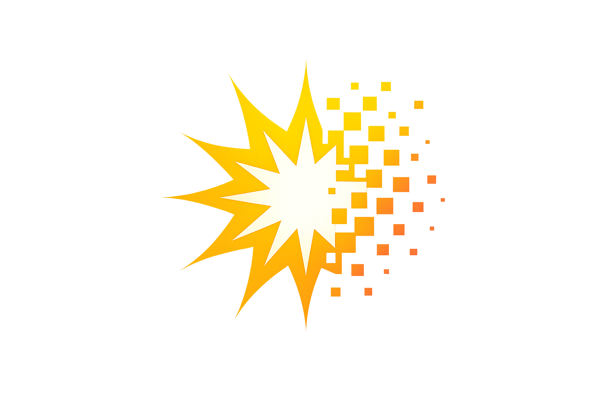

‎<!DOCTYPE html>
‎<html lang="ku" dir="ltr">
‎<head>
‎    <meta charset="UTF-8">
‎    <meta name="viewport" content="width=device-width, initial-scale=1.0">
‎    <title>Ziman | Ronesans Projêkt</title>
‎    <link href="https://fonts.googleapis.com/css2?family=Montserrat:wght@400;600;700;800&display=swap" rel="stylesheet">
‎    <style>
‎        :root {
‎            --dark-blue: #022D44;
‎            --deep-blue: #0B1D26;
‎            --bright-yellow: #F7D200;
‎            --light-grey: #E9ECE6;
‎            --white: #FFFFFF;
‎        }
‎
‎        body {
‎            margin: 0;
‎            font-family: 'Montserrat', sans-serif;
‎            background: var(--light-grey);
‎            color: var(--deep-blue);
‎        }
‎
‎        /* Header */
‎        header {
‎            background: var(--dark-blue);
‎            padding: 0.9rem 5%;
‎            border-bottom: 4px solid var(--bright-yellow);
‎            display: flex;
‎            justify-content: space-between;
‎            align-items: center;
‎            position: sticky;
‎            top: 0;
‎            z-index: 1000;
‎        }
‎
‎        .back-btn {
‎            color: var(--bright-yellow);
‎            text-decoration: none;
‎            font-weight: 700;
‎            font-size: 0.75rem;
‎            border: 1px solid var(--bright-yellow);
‎            padding: 4px 10px;
‎            transition: 0.3s;
‎        }
‎
‎        .back-btn:hover {
‎            background: var(--bright-yellow);
‎            color: var(--dark-blue);
‎        }
‎
‎        .logo-area img {
‎            height: 60px;
‎            display: block;
‎        }
‎
‎        /* Hero Ziman */
‎        .ziman-hero {
‎            position: relative;
‎            background-image: url('hero-ziman.png');
‎            background-size: cover;
‎            background-position: center;
‎            min-height: 300px;
‎            display: flex;
‎            flex-direction: column;
‎            justify-content: center;
‎            align-items: center;
‎            padding: 60px 20px;
‎            text-align: center;
‎            color: white;
‎            overflow: hidden;
‎            border-bottom: 6px solid var(--bright-yellow);
‎        }
‎
‎        .ziman-hero::before {
‎            content: "";
‎            position: absolute;
‎            inset: 0;
‎            background: linear-gradient(rgba(2, 45, 68, 0.75), rgba(11, 29, 38, 0.85));
‎            z-index: 1;
‎        }
‎
‎        .ziman-hero h1, .ziman-hero p {
‎            position: relative;
‎            z-index: 2;
‎        }
‎
‎        .ziman-hero h1 { font-size: 2.5rem; margin: 0; font-weight: 800; }
‎        .ziman-hero p { opacity: 0.9; margin-top: 10px; font-weight: 500; }
‎
‎        /* Search Section */
‎        .search-container {
‎            max-width: 800px;
‎            margin: -40px auto 40px;
‎            position: relative;
‎            z-index: 5;
‎            padding: 0 20px;
‎        }
‎
‎        .search-wrapper {
‎            background: white;
‎            padding: 10px;
‎            display: flex;
‎            box-shadow: 0 10px 30px rgba(0,0,0,0.1);
‎            border-radius: 8px;
‎        }
‎
‎        #searchInput {
‎            flex: 1;
‎            border: none;
‎            padding: 15px;
‎            font-size: 1.1rem;
‎            outline: none;
‎            font-family: inherit;
‎        }
‎
‎        /* Dictionary Grid */
‎        .dictionary-grid {
‎            max-width: 1000px;
‎            margin: 0 auto 60px;
‎            padding: 20px;
‎            display: grid;
‎            grid-template-columns: repeat(auto-fit, minmax(300px, 1fr));
‎            gap: 20px;
‎        }
‎
‎        .term-card {
‎            background: white;
‎            padding: 25px;
‎            border-left: 6px solid var(--dark-blue);
‎            box-shadow: 0 4px 6px rgba(0,0,0,0.05);
‎            transition: 0.3s;
‎            cursor: pointer;
‎        }
‎
‎        .term-card:hover {
‎            transform: translateY(-5px);
‎            border-left-color: var(--bright-yellow);
‎        }
‎
‎        .category-tag { font-size: 0.7rem; color: #F18805; font-weight: 800; text-transform: uppercase; letter-spacing: 1px; }
‎        .ku-term { font-size: 1.4rem; color: var(--dark-blue); font-weight: 700; margin: 5px 0; }
‎        .def { font-size: 0.9rem; color: #555; line-height: 1.5; }
‎
‎        .no-results {
‎            text-align: center;
‎            grid-column: 1 / -1;
‎            padding: 40px;
‎            color: #888;
‎        }
‎    </style>
‎</head>
‎<body>
‎
‎<header>
‎    <a href="index.html" class="back-btn">← VEGERANDIN</a>
‎    <div class="logo-area">
‎        
‎    </div>
‎</header>
‎
‎<section class="ziman-hero">
‎    <h1>Navenda Ziman</h1>
‎    <p>Pêvajoya nûjenkirina zimanê kurdî</p>
‎</section>
‎
‎<div class="search-container">
‎    <div class="search-wrapper">
‎        <input type="text" id="searchInput" placeholder="Li peyvê bigere..." onkeyup="searchDictionary()">
‎    </div>
‎</div>
‎
‎<div class="dictionary-grid" id="dictionaryGrid"></div>
‎
‎<script>
‎    // الأقسام المحدثة بالكردية والإنكليزية فقط
‎    const terms = [
‎        { cat: "Alphabet", ku: "Tîpên Kurdî", def: "Naskirina herf û dengên taybet ên zimanê kurdî." },
‎        { cat: "Grammar", ku: "Rêziman", def: "Bingehên rêzimana kurmancî û qaîdeyên nivîsê." },
‎        { cat: "Adjectives", ku: "Hevalnav û Daçek", def: "Taybetmendiyên peyvan û girêdanên nav hevokan." },
‎        { cat: "Verbs", ku: "Lêker", def: "Demên lêkeran û awayên kofîkirina wan di kurdî de." },
‎        { cat: "Nouns", ku: "Nav", def: "Kategoriyên navan; nêr, mê û yekjimar/pirjimar." },
‎        { cat: "Development", ku: "Pêşxistina Ziman", def: "Termên nûjen û rêbazên dewlemendkirina zimanê kurdî." }
‎    ];
‎
‎    function displayTerms(filteredTerms) {
‎        const grid = document.getElementById('dictionaryGrid');
‎        grid.innerHTML = '';
‎
‎        if (filteredTerms.length === 0) {
‎            grid.innerHTML = '<div class="no-results">Peyv nehat dîtin!</div>';
‎            return;
‎        }
‎
‎        filteredTerms.forEach(item => {
‎            const card = `
‎                <div class="term-card">
‎                    <div class="category-tag">${item.cat}</div>
‎                    <div class="ku-term">${item.ku}</div>
‎                    <div class="def">${item.def}</div>
‎                </div>
‎            `;
‎            grid.innerHTML += card;
‎        });
‎    }
‎
‎    function searchDictionary() {
‎        const query = document.getElementById('searchInput').value.toLowerCase();
‎        const filtered = terms.filter(item => 
‎            item.cat.toLowerCase().includes(query) || 
‎            item.ku.toLowerCase().includes(query)
‎        );
‎        displayTerms(filtered);
‎    }
‎
‎    displayTerms(terms);
‎</script>
‎
‎</body>
‎</html>